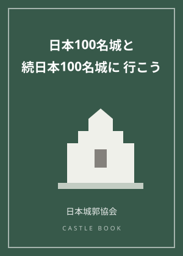

弘前城、天守の曳戻し着座が2027年秋ごろに延期へ
城と神社にまつわる新しい動きをお伝えするニュース記事です。出典は時事通信（2026年10月21日）です。青森県弘前市の弘前城では、天守を元の位置へ戻す「曳戻し」の工事で、天守が修復を終えた天守台に着座する時期が、当初の2026年11月中から2027年秋ごろへ延期されることになりました。
着座の延期は、天守に見つかった腐食が理由
当初、天守は2026年11月中に、修復を終えた天守台へ着座する予定でした。しかし、移動に影響する腐食が天守に見つかったため、着座は2027年秋ごろに延期されました。江戸時代から受け継がれてきた建物を動かす工事では、状態を確かめながら慎重に進めることが何より求められます。
重さ400トンの天守を約78メートル動かした保存修理
弘前城の天守は、重要文化財に指定されており、日本に現存する12天守のひとつです。この天守は2015年、天守台の石垣を修理するために、重さ400トンの建物をそのまま約78メートル移動させる工事が行われました。建物を解体せずに動かして土台の石垣を直すことで、文化財としての姿を保ちながら修理を進める考え方です。石垣の修復を終え、2026年7月からは天守を元の位置へ戻す「曳戻し」が始まっていました。
着座後は覆屋に囲われ、2033年ごろまで外観は見られず
天守は着座したあと、保存修理のため覆屋で囲われる予定です。そのため、工事が終了する2033年ごろまで、天守の外観を見ることができなくなります。弘前市はこの間、映像の公開や現場見学会などを通じて、天守の様子を伝えていくということです。姿が見えない期間が長く続くからこそ、工事の過程そのものを伝える取り組みが大切になります。
検定の学習ポイント
お城検定の教科書第4章と結びつくテーマです。第一に「現存12天守」。弘前城の天守は、江戸時代以前に建てられ今も残る12の天守のひとつです。第二に「重要文化財」。国に指定された文化財の建物を直す工事には、その姿と価値を守る手順が求められます。第三に「石垣修理のための天守移動（曳家・曳戻し）という保存修理の考え方」。土台を直すために建物そのものを移動させる手法があることを、丸岡城の保存修理の記事ともあわせて押さえておきましょう。
着座は2027年秋ごろの見込みです。その後は覆屋に囲われ、2033年ごろまで外観が見られなくなります。弘前城を訪れる機会があれば、元の位置へ戻る途上にある、今だけの天守の姿にも目を向けてみてください。
同じテーマの記事：
この記事のおすすめ本

表紙イメージ（実際の表紙とは異なります）
PR ガイド・スタンプ帳
日本100名城に行こう 公式スタンプ帳つき
著者：公益財団法人 日本城郭協会
日本100名城の公式ガイドブック。1城1ページで見どころを解説し、巻末がそのまま公式スタンプ帳になります。スタンプラリーを始めるならまずこの一冊。
Amazonで見る価格はAmazonでご確認ください／リンク先：Amazon.co.jp

表紙イメージ（実際の表紙とは異なります）
PR ガイド・スタンプ帳
日本100名城と続日本100名城に行こう 公式スタンプ帳つき
著者：公益財団法人 日本城郭協会
100名城と続100名城、あわせて200城を一冊に収録した合本版。すでに100名城を巡り始めた人が、続編までまとめて持ち歩きたいときに便利です。
Amazonで見る価格はAmazonでご確認ください／リンク先：Amazon.co.jp
当サイトは、Amazon.co.jpを宣伝しリンクすることによってサイトが紹介料を獲得できる手段を提供することを目的に設定されたアフィリエイトプログラムである、Amazonアソシエイト・プログラムの参加者です。価格・在庫はリンク先でご確認ください。